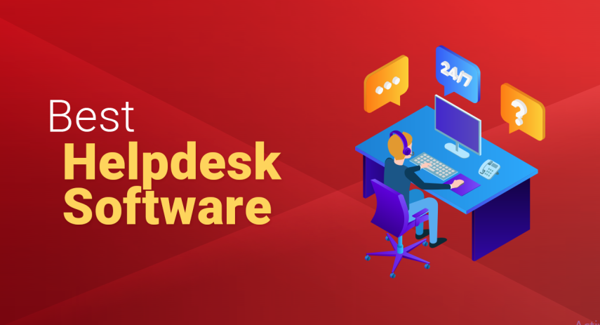
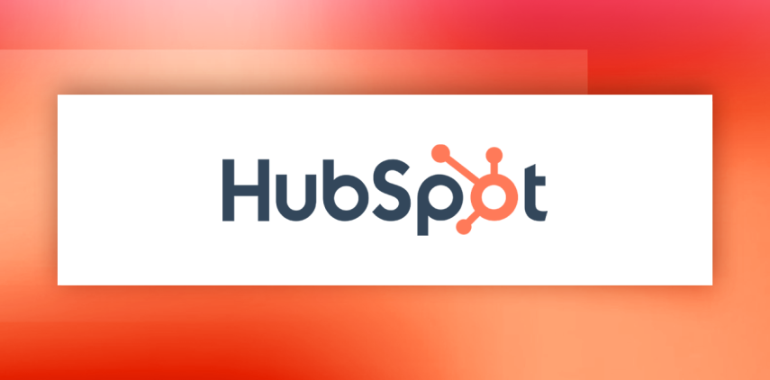
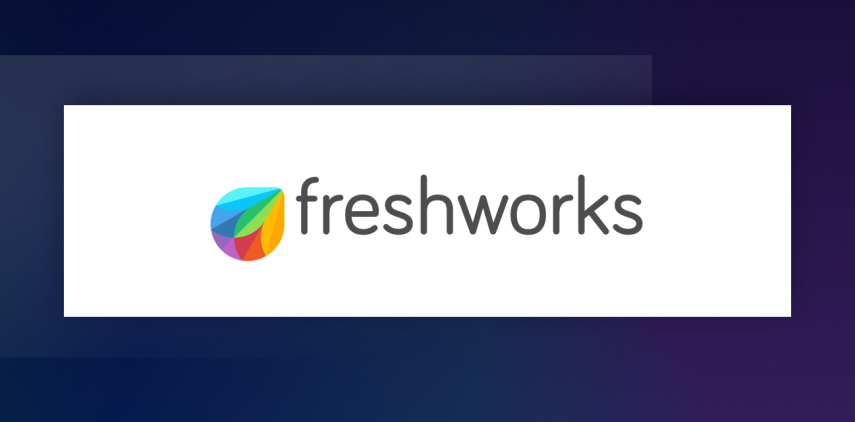

Best Helpdesk Software
James McGill | Updated on August 9th 2024Privacy and Technology Consultant In a hurry? Here’s the top Helpdesk Software for 2025:
Helpdesk software is a digital solution that simplifies customer support processes by managing and organizing support tickets. This platform centralizes communication across various channels, including email, phone, and social media, enabling support teams to efficiently track, prioritize, and respond to customer inquiries. Key features typically include ticket management, automated workflows, reporting tools, knowledge bases, and live chat support, all of which contribute to faster resolutions and enhanced customer satisfaction.
Why is a Helpdesk Solution Essential for Modern Businesses?
Here are the key reasons why a helpdesk solution is indispensable for a modern business like yours:
- Unified Customer View: It merges interactions from various channels into one platform, providing agents with a comprehensive view of each customer’s history and needs.
- Scalability: It effortlessly manages an increasing number of customer requests without overburdening agents, allowing you to scale your customer service operations smoothly.
- Enhanced Teamwork: With features like shared ticket information, internal notes, and collaborative tools, it streamlines teamwork among service agents, reducing duplicated efforts and ensuring consistent customer support.
- Superior Organization: Helpdesk tools offer advanced categorization, tagging, and integration capabilities, surpassing basic email functions and enabling better customer service management and easier information retrieval.
- Comprehensive Reporting: Built-in reporting tools provide crucial metrics and analytics, helping managers refine strategies and improve customer service outcomes.
An overview of the best Helpdesk Software for 2025:
- 🥇 1. Hubspot — HubSpot's helpdesk workspace offers a comprehensive suite of tools to manage customer support efficiently. With features like ticket management, automation, and detailed analytics, it ensures that businesses can provide timely and effective resolutions to customer inquiries.
- 🥈 2. Freshdesk — Freshdesk provides a robust helpdesk solution with features such as ticket management, multi-channel support, and automation. Its user-friendly interface and powerful tools enable businesses to streamline their customer support operations and enhance customer satisfaction.
- 🥉 3. Tidio — Tidio's helpdesk solution combines live chat, chatbots, and a comprehensive ticketing system to streamline customer support. Its seamless integration with various platforms allows businesses to provide instant, automated, and efficient responses, improving overall customer engagement and satisfaction.
- Frequently Asked Questions about Helpdesk Software (FAQ).
How Does Helpdesk Software Work?
Helpdesk software operates through a structured process designed to streamline contact center operations. Here’s a step-by-step guide to its typical functionality:
- Ticket Creation: When a customer submits a request via email, web form, social media, or other customer service channels, the helpdesk software automatically generates a ticket. This ticket serves as the primary record of the customer’s issue.
- Ticket Routing: Based on predefined rules, the system assigns the ticket to the appropriate department or contact center agent. Routing criteria can include the nature of the issue, the customer’s location, priority level, or the agent’s expertise.
- Notification and Acknowledgment: Once a ticket is assigned, the software notifies the designated agent. At the same time, it can send an automated response to the customer, acknowledging receipt of their query and providing an estimated response time.
- Collaboration and Escalation: Agents can collaborate within the ticket by adding notes, tagging team members, or escalating the ticket to higher-level support or a specialized department if the issue is complex.
- Problem-Solving: The agent works on resolving the problem using integrated tools such as knowledge bases, past ticket histories, and linked documentation. They may also interact with the customer for additional information.
- Resolution and Feedback: Once the issue is resolved, the agent updates the ticket and notifies the customer. The customer may be prompted to provide feedback through a survey, which is then recorded in the system.
- Problem-Solving: The agent works on resolving the problem using integrated tools such as knowledge bases, past ticket histories, and linked documentation. They may also interact with the customer for additional information.
- Ticket Closure: The agent works on resolving the problem using integrated tools such as knowledge bases, past ticket histories, and linked documentation. They may also interact with the customer for additional information.
- Problem-Solving: After confirming that the customer’s issue is resolved and collecting any feedback, the ticket is closed in the system. This systematic approach ensures efficient and effective management of customer support requests, enhancing overall customer satisfaction.
Now that you recognize how crucial helpdesk software is for your business, it’s time to find the perfect fit for your needs. Choosing the right helpdesk software can be overwhelming, with so many options and features to consider. Don’t worry, we’ve done the hard work for you and identified the top three helpdesk software solutions. Read on to discover which one is best for you.
1. Hubspot — Comprehensive Helpdesk Solution

HubSpot Service Hub is a versatile and powerful helpdesk software that integrates seamlessly with HubSpot’s CRM platform, offering a unified solution for managing customer support. It excels in ticket management, allowing businesses to efficiently log, organize, and prioritize customer issues through a combined inbox accessible to the entire support team. The platform includes automated customer service tools, such as chatbots and predefined workflows, which enhance efficiency and reduce response times. Additionally, HubSpot Service Hub features a knowledge base for self-service, enabling customers to find answers independently, and VoIP calling for direct client communication from within the platform.
One of the standout aspects of HubSpot Service Hub is its scalability and flexibility, catering to businesses of all sizes with various pricing tiers. The free version offers essential features like live chat, ticketing, and basic reporting, making it an excellent starting point for small businesses. As businesses grow, they can upgrade to more advanced plans that include features such as advanced ticket routing, customer feedback surveys, and automation workflows. These capabilities not only streamline customer service operations but also provide valuable insights through detailed analytics and reports, helping businesses improve their customer support strategies and enhance overall customer satisfaction.
The platform's flexibility, from a free plan for small businesses to advanced features for large enterprises, ensures it can meet the needs of any organization, making it an excellent choice for improving customer satisfaction and support efficiency.
Get Hubspot - The Leading Helpdesk Software!
2. Freshdesk — Easy Ticket Management

Freshdesk is recognized as one of the best helpdesk software solutions due to its comprehensive feature set and user-friendly interface. It effectively converts requests from multiple channels, such as email, web, phone, chat, and social media, into organized tickets, ensuring seamless issue resolution. The platform excels in automation, allowing businesses to streamline workflows, prioritize tasks, and maintain high efficiency in customer support operations. Key features include AI-powered chatbots, a robust knowledge base for self-service, SLA management, and multi-channel support, which collectively enhance the overall customer experience.
Moreover, Freshdesk's extensive integration capabilities with various CRM systems and business applications make it highly adaptable and scalable for businesses of all sizes. Its advanced reporting and analytics tools enable companies to monitor performance metrics, customer satisfaction, and agent productivity. With over 50,000+ satisfied customers, including major brands like Hugo Boss, Toshiba, and Cisco, Freshdesk has proven to be a reliable and effective solution for managing customer support.
Freshdesk stands out as a premier helpdesk software solution, offering an extensive array of features designed to streamline customer support operations. Its ability to integrate multiple communication channels into a unified ticketing system, combined with powerful automation capabilities and AI-driven tools, ensures that customer issues are resolved efficiently and effectively.
Get Freshdesk - The Leading Helpdesk Software!
3. Tidio — All-in-One Customer Service Platform
Tidio is a comprehensive live chat, chatbot, and ticketing solution designed for small and mid-size businesses to enhance customer support and drive sales. It features an extensive library of chatbot templates for both support and sales, with advanced AI chatbots available for higher-tier plans. The platform offers a free tier that supports basic needs, including up to 50 live chat conversations monthly, with paid plans starting at $29 per month for increased capabilities. Tidio's intuitive interface and seamless CRM integrations make it a practical choice for efficient customer service management.
One of Tidio's standout features is its user-friendly customization options, such as setting up welcome messages and viewing user typing in real-time to boost productivity. The platform also provides analytics to track live chat and chatbot performance, though these are less advanced compared to some competitors. Tidio's advanced AI response bots can handle up to 70% of customer queries, and its ticketing system efficiently manages requests with priority levels and tags.
Overall, Tidio offers a scalable and flexible solution for businesses looking to enhance customer engagement and support operations. Its extensive feature set, including live chat, AI-driven chatbots, and ticketing, ensures that customer inquiries are efficiently managed. With seamless integration options, user-friendly customization, and competitive pricing plans, Tidio is well-suited for businesses of all sizes. Whether you are a small business starting with the free tier or a larger enterprise needing advanced automation and analytics, Tidio provides a comprehensive platform to boost customer satisfaction and streamline support processes.
Get Tidio - The Leading Helpdesk Software!
How We Chose The Best Helpdesk Software
To select the best helpdesk software, we evaluated a multitude of products to ensure that our recommendations meet the highest standards. Before we make a recommendation, a helpdesk software must satisfy the following criteria:
- Comprehensive Support Features: We endorse software that offers robust support functionalities, including ticket management, live chat, knowledge base, and automation. The best helpdesk software should streamline and enhance the customer support experience.
- A Great Customer Experience: The software should facilitate excellent customer interactions, ensuring that issues are resolved promptly and efficiently, leading to higher customer satisfaction and loyalty.
- An Intuitive Interface: Our recommendations are easy to set up and use, catering to all levels of technical expertise. An intuitive design and ease of navigation are crucial for ensuring that support teams can operate efficiently and effectively.
- Minimal Impact on System Performance: Our top choices are lightweight and efficient, ensuring they do not slow down your systems, even when handling a high volume of support tickets.
- Advanced Integrations and Customizations: The helpdesk software we recommend can seamlessly integrate with other tools and platforms, offering customization options to fit various business needs. This ensures a cohesive and efficient support ecosystem.
- Security and Compliance Features: We prioritize software that includes robust security measures and complies with relevant regulations to protect sensitive customer data and ensure privacy.
- Great Customer Support: Our top picks offer exceptional customer support to help you set up, troubleshoot, and maximize the software's potential, ensuring you get the most out of your investment.
- Scalability: The helpdesk software must be able to grow with your business, accommodating increasing support demands and expanding functionalities as needed.
- Great Value for Money: Our top picks offer excellent value, including features like multi-channel support, analytics, and reporting. They also come with money-back guarantees or trial periods, so you can assess their suitability for your needs before making a commitment.
Product Helpdesk Software - Frequently Asked Questions (FAQ)
💽 What is helpdesk software?
Helpdesk software is a tool designed to provide customer support and manage customer inquiries. It helps streamline the process of tracking, prioritizing, and resolving customer issues through various channels such as email, live chat, phone, and social media.
📩 What is a ticketing system in helpdesk software?
A ticketing system is a core component of helpdesk software that converts customer inquiries into tickets. These tickets are tracked, prioritized, and assigned to support agents for resolution. The system ensures that no customer query goes unanswered and helps in managing and resolving issues efficiently.
🌍 Can helpdesk software support multiple languages?
Many helpdesk software solutions offer multi-language support to cater to businesses operating in different regions. This feature allows customer service teams to provide support in various languages, improving accessibility and customer satisfaction.
💰 What is the cost of helpdesk software?
The cost of helpdesk software varies depending on the provider, features, and number of users. Some offer tiered pricing plans based on the level of service and support required, while others might offer a flat rate or per-user pricing. It's important to evaluate your needs and budget before selecting a plan.
🏡 Can small businesses benefit from helpdesk software?
Absolutely. Helpdesk software is beneficial for businesses of all sizes. For small businesses, it helps manage customer inquiries efficiently, improves response times, and provides a professional level of customer support without the need for a large support team.
Transparency and Trust: The aim of this website is to help you find the perfect software for your needs in an easy-to-view comparison list. You can read more about how we review and about our background in the About Us section of this website. Software.fish does not feature all of the software available in the market, we cherry-pick what we consider to be the leaders in each vertical. We try to keep this site updated and fresh, but cannot guarantee the accuracy of the information as well as the prices featured at all times. All prices quoted on this site are based on USD so there could be slight discrepancies due to currency fluctuations. Although the site is free to use, we do earn commissions from the software companies that we have partnered with. If you click on one of our links and then make a purchase, we will get paid by that company. This has an impact on the ranking, score, and order in which the software is presented in our list and elsewhere throughout the site. Software listings on this page DO NOT imply endorsement.